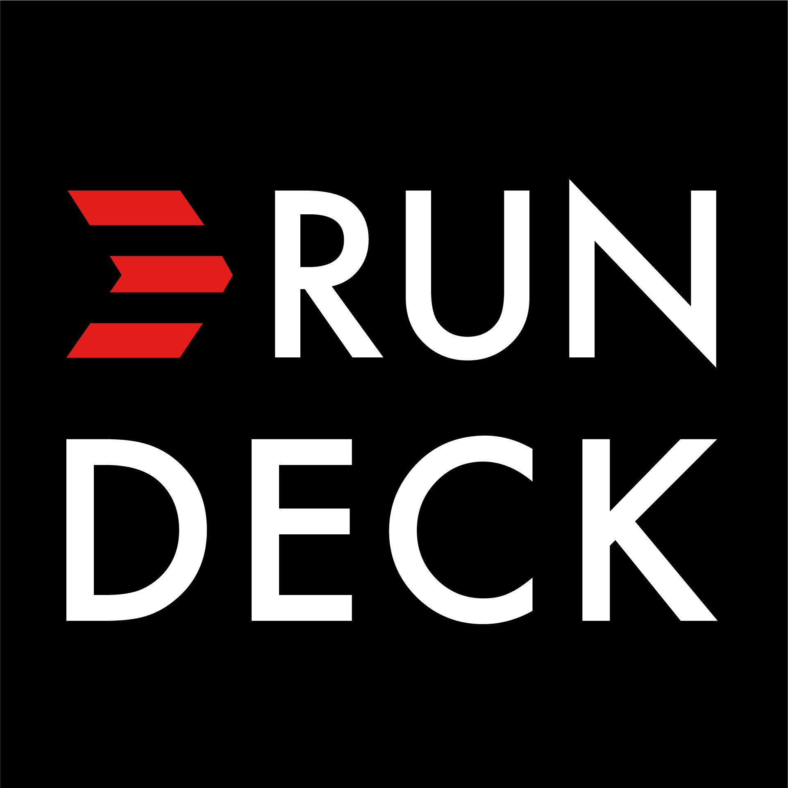
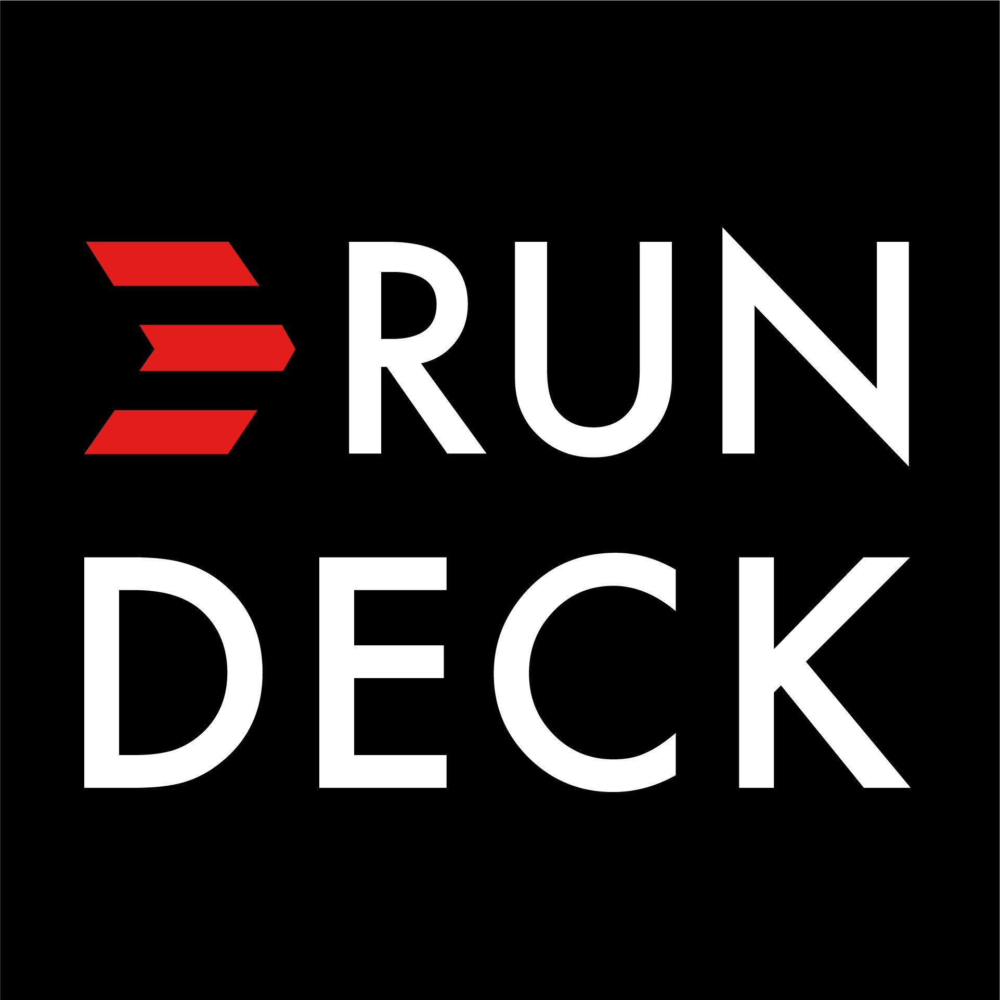

Infrastructure Redesign
PART 1 Provisionning & OrchestrationA brief History..
We used to edit website on a single server
Webistes used to be static html files with static datas
And then, we started to share code between devs with USB keys
Now every Apps on the web are incredibly dynamic and infrastructures needed are even more complicated
What we need..
High Avaibility
High Velocity
Security Survey: Infra, Communication & Software Fixes
Frequent deployment that match business needs
Typical skeleton of nowadays apps
At least 2 databases server for data redundency
At least 2 binary app server for HA
At least 2 reverse proxy for Load Balancing
At least 2 repl. LDAP servers to store customer infos
All of these in at least 2 geograhical location
Secure connections to needed services and apps
Goal is to be up to date, secure, and up 99,9% of time
DevOps philosophy
IAS > Infrastrucure as Code
Versionning and Readability
Reproductible environments
No manual action on servers
Technology monitoring
Listen carefully to app dev needs
DevOps Tools
Provisionners : Conf & Packages Management
- Puppet
- Salt
- Chef ( and even more )
App dependency managers
- npm | yarn -> Javascript
- maven -> Java
- composer -> PHP
DevOps Tools
Job Schedulers
- Crontabs
- Rundeck : Centralized and capable of delegating
Orchestrators
- Salstack
- Ansible
- Rundeck
- Apache Brooklyn
Advanced Orchestrator Features
- Job with Complex Workflow definition
- Dispatched to several nodes
- Parrallel / Sequential / Hybrid
DevOps Tools
Monitoring & Metrics
- Nagios
- Icinga | Grafana
- Zabbix
- Netdata + InfluxDB + Grafana
Centralized Log Management
- ELK -> Elastic | Logstash | Kibana
Roadmap
clear the existing debt
- Indoor Platform
- Managed Web Projects
Ameliorate Infrastructure
- Orchestration
- Monitoring
- Logs Centralization
Ameliorate Infrastructure
- New Automating tools Integration
- Containerization (Docker/Jail)
Propagate to other Environments
- Existing ones
- Cloud IAAS (AWS|GCP)